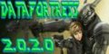
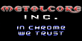
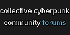
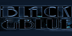

Cyberpunk
2020
Cyberpunk
Blog / Forum
Cyberpunk
BD

Datafortress 2020
Karsten's Archive
Liber Mundi

Metalcore Inc.
Views from the Edge

Cyberpunk Community Forum
Mono|culture

Black & Blue
The Outrunners